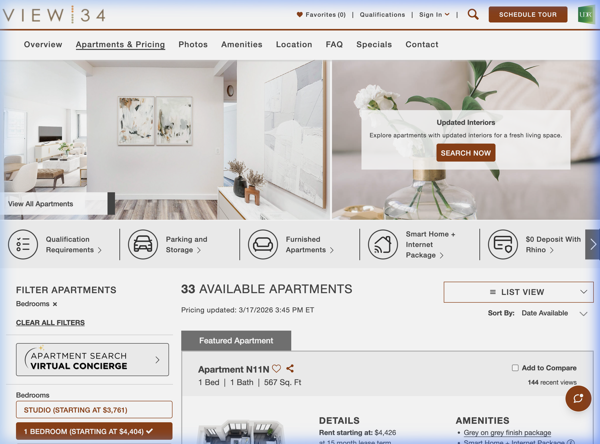
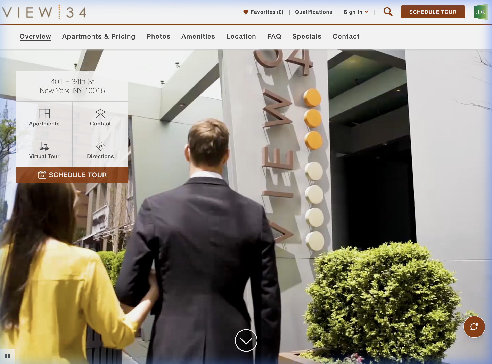

Stop maintaining brittle selectors. PixelMind orchestrates Gemini 3 Flash Preview and Flash agents to navigate, reason, and validate your UI exactly as a human would — with zero script maintenance.
DOM-bound scripts fail the moment a developer renames a class or restructures a component. The result: endless maintenance cycles that scale with your codebase — not with your ambitions.
Every UI change cascades into test failures. Your QA team spends more time patching automation than discovering real bugs.
The agent sees the UI the same way a human does — through screenshots. No selectors. No structure assumptions. Just intent.
Powered by Gemini 3 Flash Preview's high-capacity reasoning, the Planner orchestrates independent Actors that navigate the UI using visual-spatial semantics instead of fragile HTML selectors.
The agent ingests full-page screenshots and understands context, layout, and meaning — just like a human QA analyst reviewing a live product.
Seamlessly bridge agents to Jira, Slack, and CI/CD tools via the Model Context Protocol. Automated defect tickets include annotated trace logs and reasoning chains.
The agent generates real-time SQLi, fuzzing, and boundary payloads, visually assessing UI collapses or data leaks in real-time.
Uses SSIM (Structural Similarity Index) to detect UI layout shifts and automatically adapt interaction coordinates without human intervention.
The Run Explorer provides a high-fidelity window into the agent's mind. Watch live executions, analyze annotated traces, and triage enterprise-grade defect reports in a single glassmorphic interface.
The framework orchestrates a fully autonomous loop — perceive, reason, act, validate, and report — without human guidance at any stage.
Plain-English instruction provided by the operator or CI pipeline trigger.
Gemini 3 Flash Preview decomposes the goal into a sequenced, adaptive action plan.
Playwright executes browser actions guided by the AI's visual analysis.
The agent qualitatively asserts whether the UI state matches the intended outcome.
Structured, human-readable output with annotated screenshots and reasoning trace.
Test scenario: "Verify the availability of 1-bedroom apartments on UDR Murray Hill." The agent autonomously identified the filter panel, applied the correct criteria, and validated the result count.

